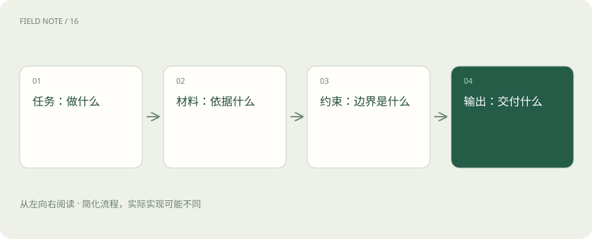

先用一个类比理解
给同事布置任务时，只说“帮我弄好”通常不够。你会交代目的、参考材料、不能做什么以及交付格式，提示词也遵循类似原则。
类比只帮助建立直觉，不等同于技术的完整机制。
一图看懂

把模糊愿望变成可判断要求
“写得专业”难以验收；“用三段向非技术读者解释，保留两个风险点”更具体。给出少量示例能够说明你希望的格式和判断标准，但示例也可能把模型引向错误模式。
结构化输出解决格式，不包办事实
JSON 是常见的数据交换格式，像一张字段固定的表。约束输出结构可以帮助程序读取，但格式合规和内容正确仍应分别检查。某字段是合法数字，不代表这个数字有来源。
给资料与给指令分清边界
上传的网页和文档可能包含让模型改变行为的文字。系统应把外部内容作为待处理数据，而非自动提升为高权限指令。模型调用工具时，还需要应用层验证权限和参数。
放进真实场景
SCENARIO
可以这样表达：“依据下方文章，给新手写 150 字摘要；列出两个原文支持的结论；原文没说的内容标为未知。”这是可复用的要求，不是万能模板。
别踩这个误区
要求“你是世界顶级专家”不能替代事实来源、明确约束和结果检查。
想一想
输出符合 JSON 结构，能证明其中事实正确吗？
不能。结构验证和事实验证解决不同问题。
关联阅读
资料与边界
以下是对应技术的官方文档或项目入口。本文为原创入门讲解，图示与场景经过简化；示例数字不代表实测或报价。整理日期：2026-11-04。工具功能与版本支持会变化，请以原始资料为准。